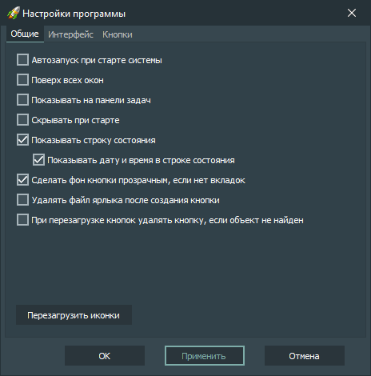

Общие настройки:
-
Автозапуск при старте системы
Запускать приложение при загрузке операционной системы.
-
Поверх всех окон
Главное окно приложения всегда будет находиться поверх всех других окон.
-
Показывать на панели задач
Показывать приложение на панели задач.
-
Скрывать при старте
Запускать приложение со скрытым главным окном.
-
Показывать строку состояния
Показывать строку состояния в главном окне приложения.
-
Показывать дату и время в строке состояния
Показывать дату и время в строке состояния в главном окне приложения.
-
Сделать фон кнопки прозрачным, если нет вкладок
Фон кнопок становится прозрачным, если в главном окне приложения отсутствуют вкладки.
-
Удалить файл ярлыка при создании кнопки
Файл ярлыка будет удаляться при создании кнопки, если опция включена.
-
При перезагрузке кнопок удалять кнопку, если объект не найден
При перезагрузке всех кнопок, те кнопки, где объекты не найдены, будут удаляться.
-
Кнопка «Перезагрузить иконки»
При нажатии этой кнопки производится перезагрузка всех иконок.